SARS-Cov-2
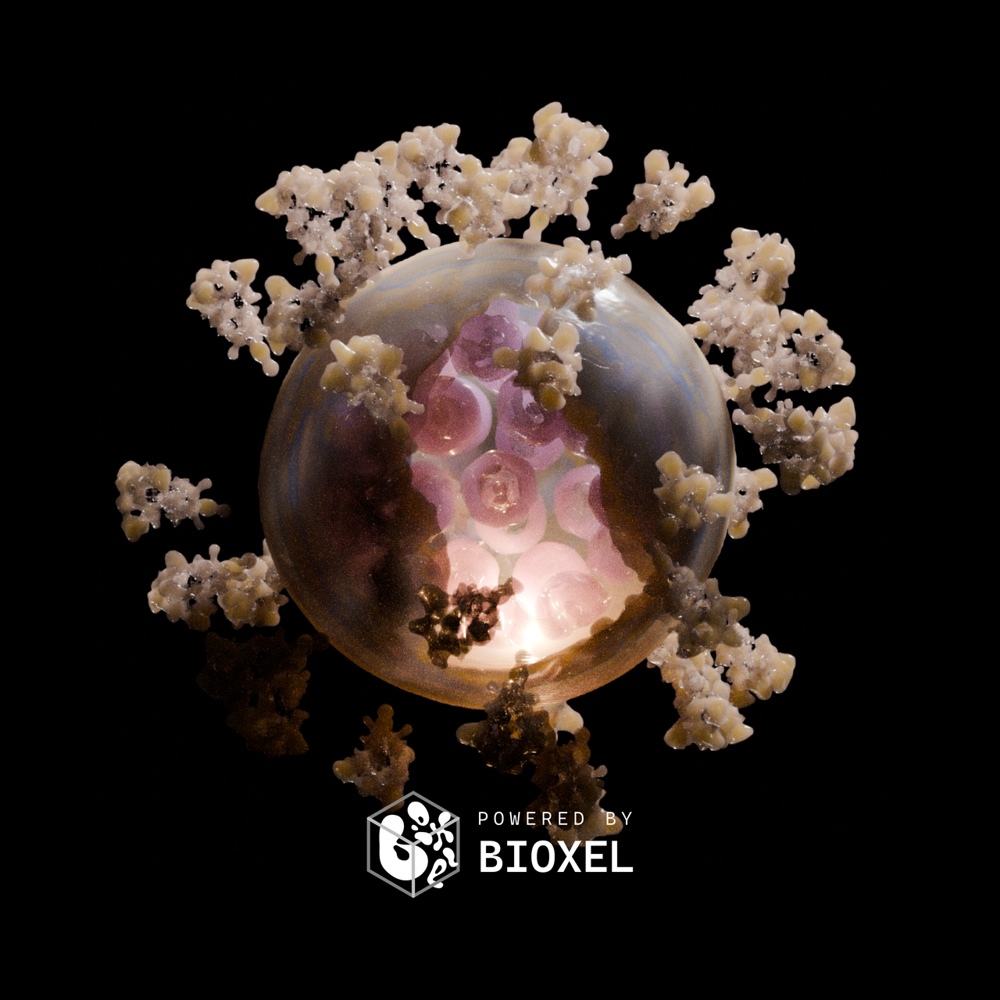
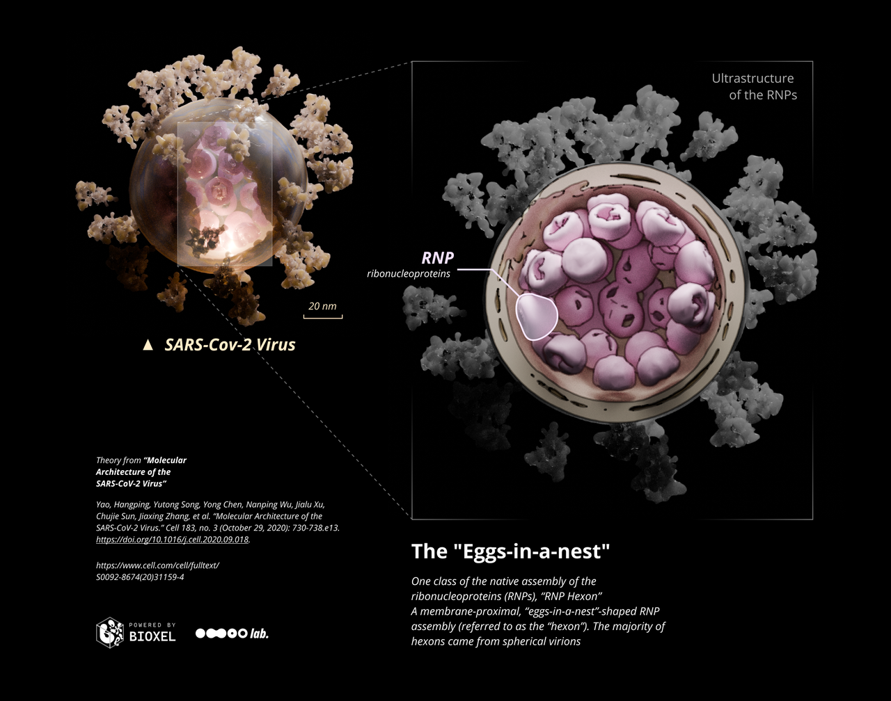
在本教程中，我们将制作 SARS-Cov-2 病毒的结构可视化。请确保您已阅读分步指南以了解插件的基本使用方法，并确保插件版本为 v1.0.2 或更高！
研究数据来自 2020 年 9 月发表在 Cell Press 的论文（https://www.cell.com/cell/fulltext/S0092-8674(20)31159-4），作者是清华大学李赛团队。该研究使用冷冻电子断层扫描（cryo-ET）和亚断层图平均（STA）揭示了真实 SARS-CoV-2 病毒的分子组装。以下是该研究的官方视频：
"冠状病毒如何将约 30kb 的 RNA 包装到约 80nm 直径的病毒腔内仍然是个谜。RNP 彼此之间是否有序以避免 RNA 缠结、打结或损坏，还是它们参与病毒组装？" 论文中提出了三类组装方式，我们将基于真实的冷冻电镜数据，制作"巢中蛋"形 RNP 组装的可视化。
下载和导入数据
该研究的数据托管在 EMDB（https://www.ebi.ac.uk/emdb），SARS-Cov-2 病毒网站是这里。打开页面，找到"Download"按钮，选择第一个选项"3D Volume (.map.gz)"。
如果您无法下载数据，可以从这里下载。
下载后，放到任意目录并导入数据。在导入选项中，建议将 Bioxel Size 调整为 5，以减小数据形状，提高计算和渲染速度。如果您对硬件性能有信心，可以保持原始的 2.72 不变。调整 Bioxel Size 后，下方会根据当前的 bioxel size 计算转换后数据的形状。数据量会随着形状增大呈指数增长，可能会导致内存不足（OOM）。
切割病毒
导入后，您可以通过创建和连接节点并设置参数来获取病毒，如下图所示。
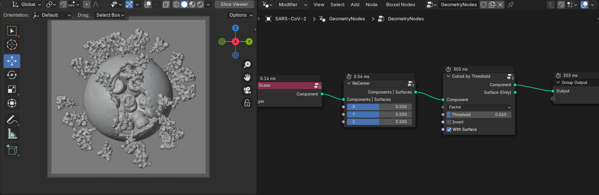
按下图所示放置灯光和相机。背光是区域光，白色，强度 500W，扩散 90°；在病毒内部放置一个点光源，颜色 FFD08D，强度 5W。相机焦距为 200mm。背景颜色为纯黑色。颜色管理的 Look 为 High Contrast。
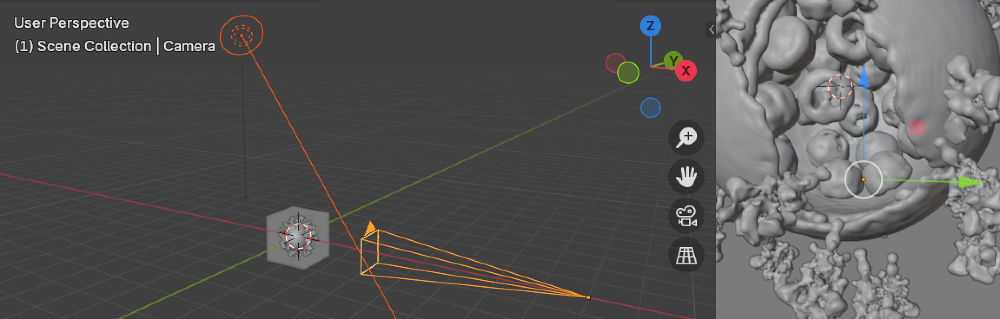
继续编辑节点，接着是"Set Properties"和"Set Color by Ramp 4"节点，这两个节点的参数设置如下图，其中颜色部分，从上到下设置为 E1D0FC（1.0）、FFE42D（0.5）、3793FF（0.5）、FFFF8EC（0.1）（括号中为 alpha 值）。颜色的 alpha 值也会影响密度。
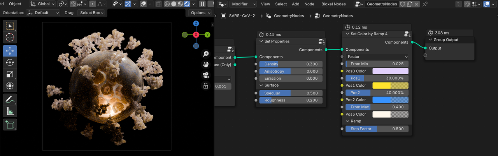
如果您觉得渲染太慢，请参阅这里获取建议。
单独为 RNP 着色
当前的渲染效果很好，但考虑到我的目标是让您清楚看到 RNP 在病毒内部的排列方式，RNP 应该与其他部分用不同颜色着色。那么如何单独为 RNP 着色呢？
首先，我们必须分离 RNP。RNP 的值介于膜和 S 蛋白之间，因此很难分离。好在病毒是球形的，我们可以使用球形切割器将病毒的 RNP 部分与其余部分分离。为此，在容器的几何节点面板菜单中，点击 Bioxel Nodes > Add a Cutter > Sphere Cutter，并适当调整新创建的名为"Sphere_Cutter"的球体对象的大小和位置，使其恰好能将病毒内部的 RNP 和膜分离。
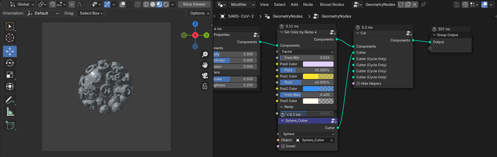
改变"Sphere_Cutter"对象的位置可能会非常卡顿，此时您可以关闭"With Surface"并在 Slice Viewer 模式下操作。满意后，恢复设置。
然后在"Sphere Cutter"节点中打开 Invert，您可以看到相反的结果。这样我们就成功将两者分离了。接下来让我们分别着色，最后用 Join Component 合并。按如下图所示创建和连接节点，其中第二个 Cutter 节点是复制的，Set Color 中的颜色值设置为 FFDDFE（0.5）。如果一切正常，渲染结果应该如下图所示。
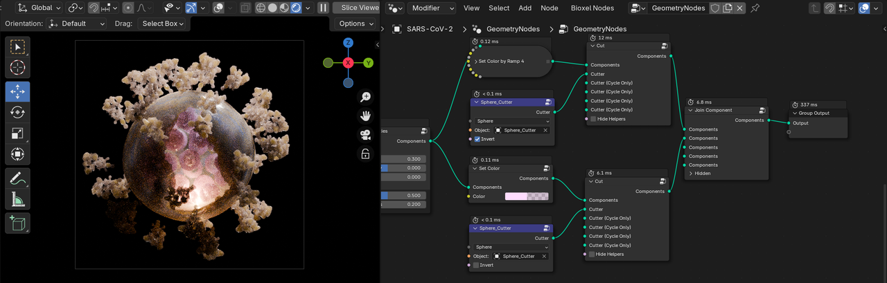
此时，SARS-Cov-2 病毒的渲染完成了！
渲染 RNP 和膜
写实渲染很棒，但非写实渲染（NPR）在呈现结构信息方面更好。因此，我将使用卡通着色器来渲染 RNP 组装的首尾结构。
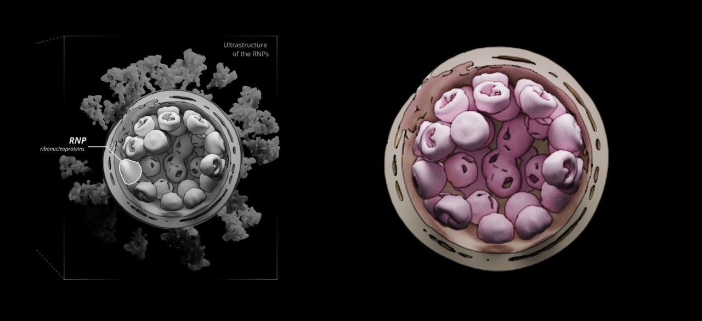
RNP 的轮廓使用 Blender 的线稿（Line Art）功能，但线稿必须基于网格。选择挤出 RNP 的节点（即负责切割出 RNP 的"Cut"节点），右键点击 Bioxel Nodes > Extract Mesh。这将为您创建一个 RNP 的新网格对象。
用同样的方式提取膜网格。
膜的病毒值远高于其他部分，因此让我们创建一个新的"Cutout"节点，同样在 ReCenter 之后，但阈值调整为 0.13。Cutout 后，连接到"To Surface"节点并按如下图所示设置参数，注意 Remove Island Threshold 设置为 1000，以便消除小于 1000 pts 的任何碎片。然后选择"To Surface"节点，执行提取网格的操作。
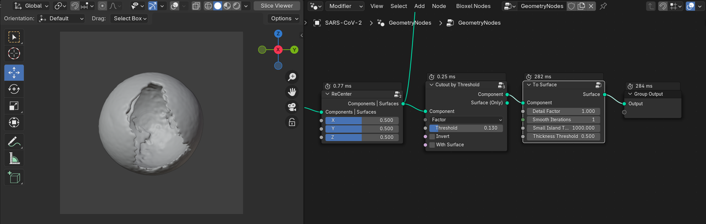
膜的网格需要切成两半，这可以通过雕刻模式中的 Box Trim 笔刷或布尔修改器来完成。RNP 的网格也可能需要一些修复工作，我清理了一些 RNP 的破损表面。所有网格现在都可以使用了。
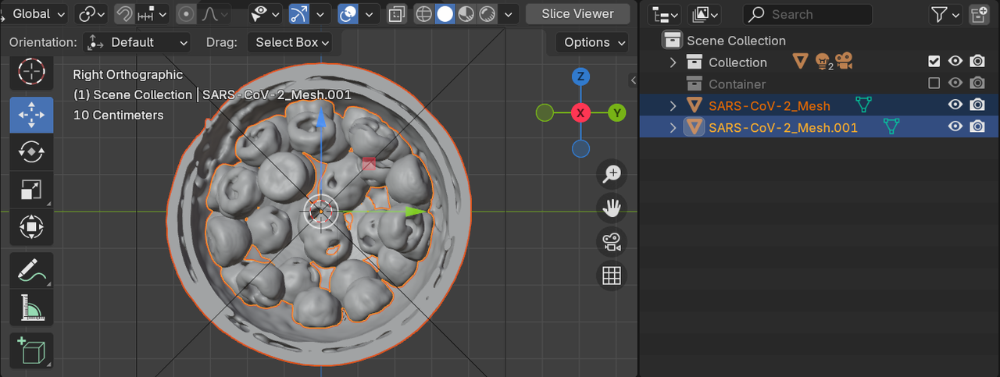
关于线稿，请参阅 Blender Secrets 的视频教程。
最后，RNP 超微结构的信息图完成了！
如果您按照文档有困难，可以下载项目文件。
作业
论文中提供了其他相关数据，您可以尝试可视化它们。
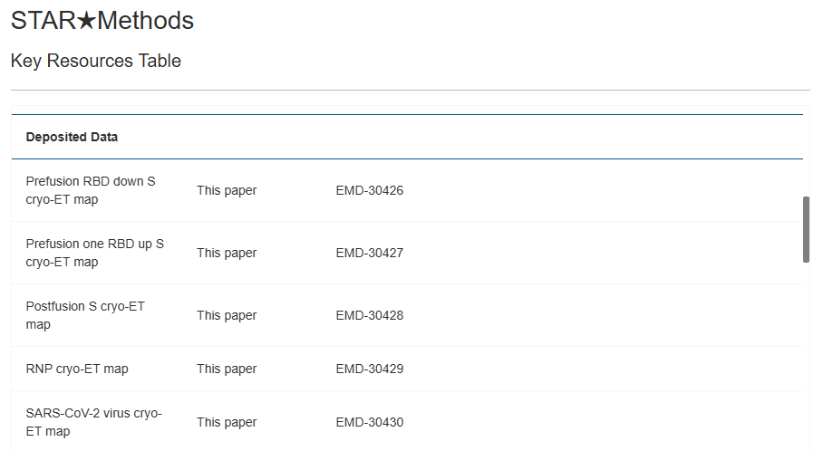
前往官方 EMDB 网站 https://www.ebi.ac.uk/emdb/，在搜索框中输入 EMD 编号即可获取。
电子显微镜数据银行（EMDB）是一个公共仓库，用于存放冷冻样品的电子显微镜（cryoEM）体积和代表性断层图。如果您想获取其他病毒的数据，只需在搜索框中输入其名称即可。例如，乙型肝炎病毒，在搜索框中输入，然后选择左侧 Sample Type 中的 Virus，下载您需要的数据（最好找到相应的论文来明确数据信息）。
尝试可视化乙型肝炎病毒。
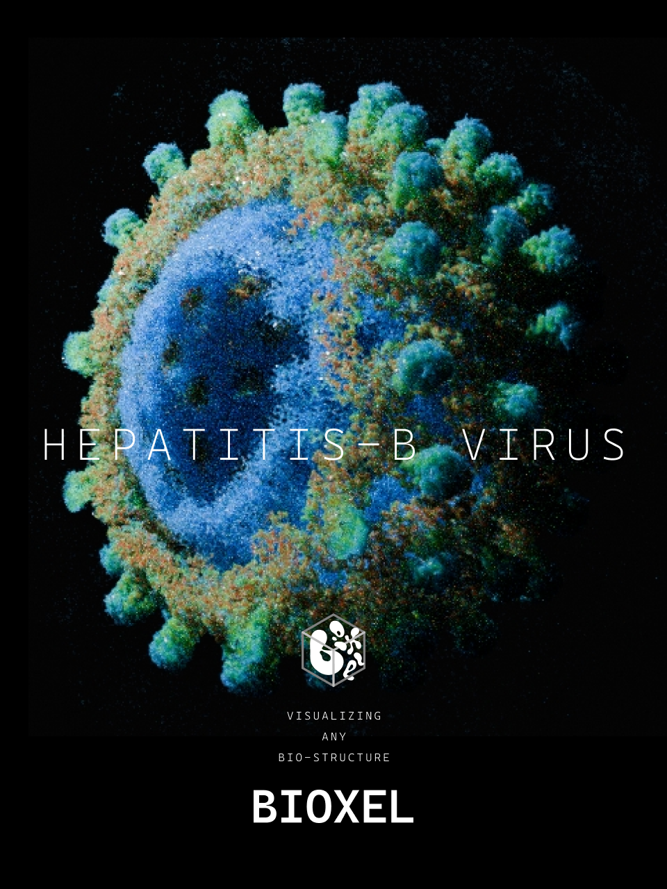